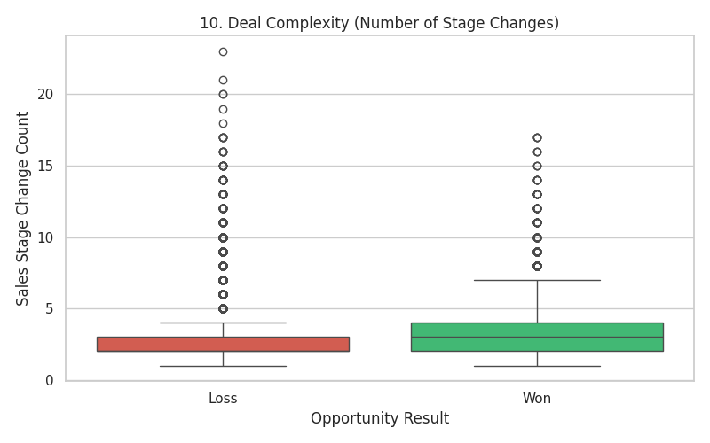
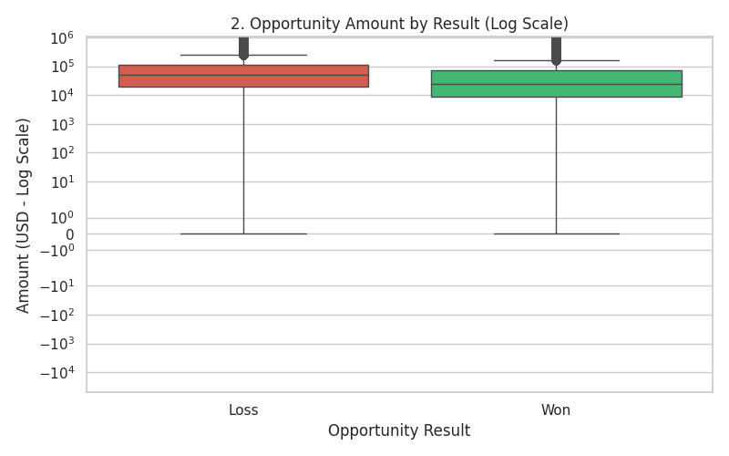
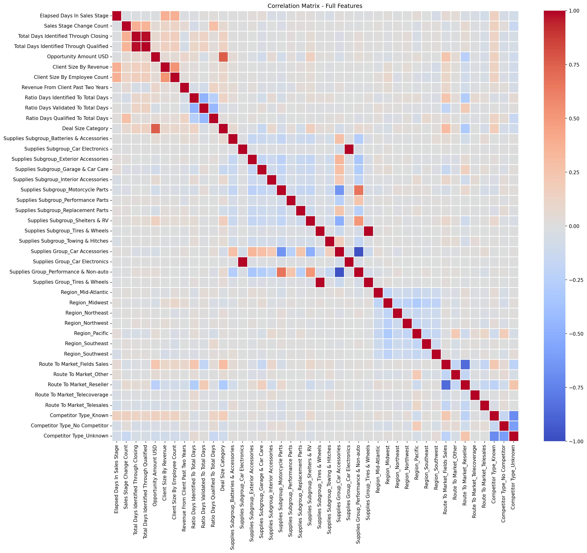
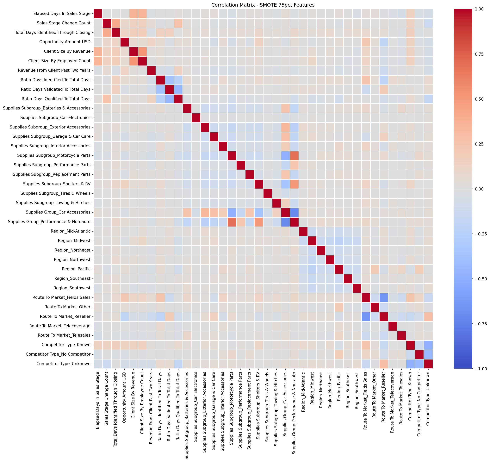
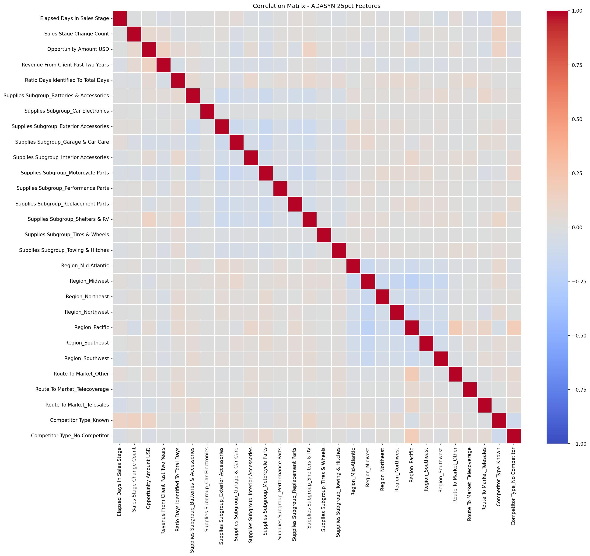
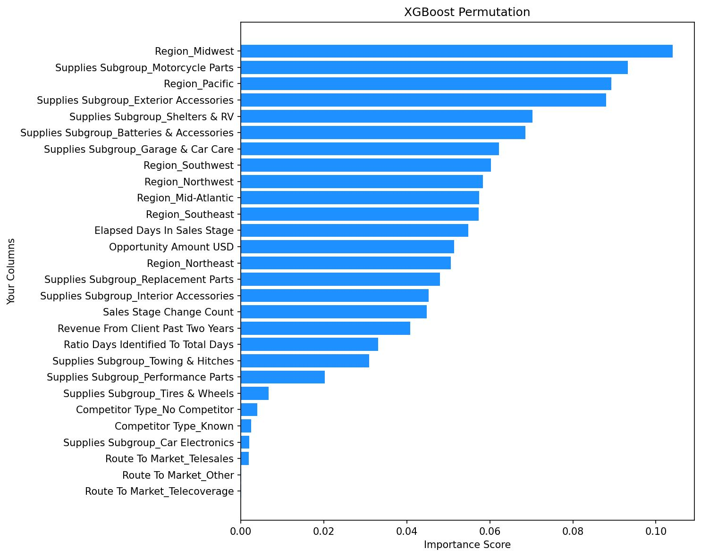
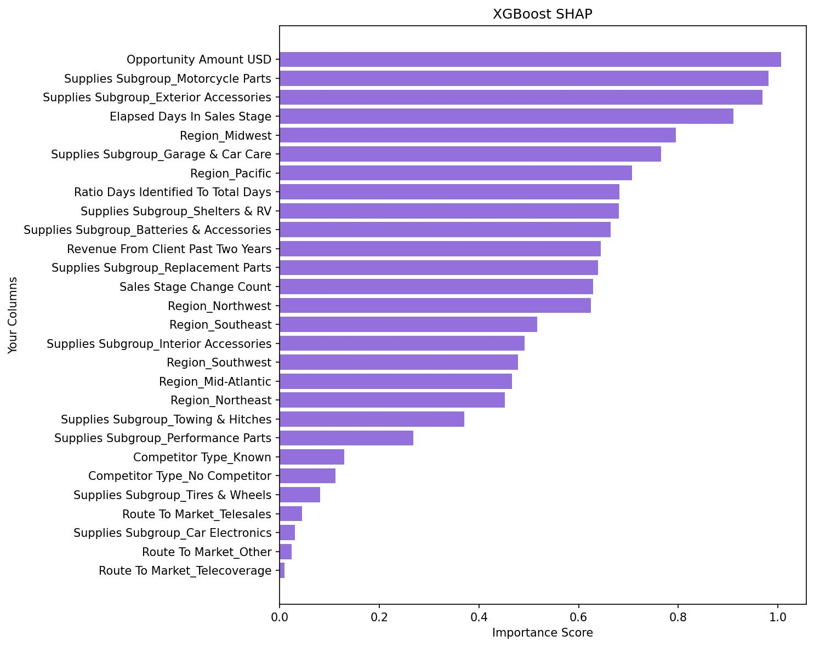
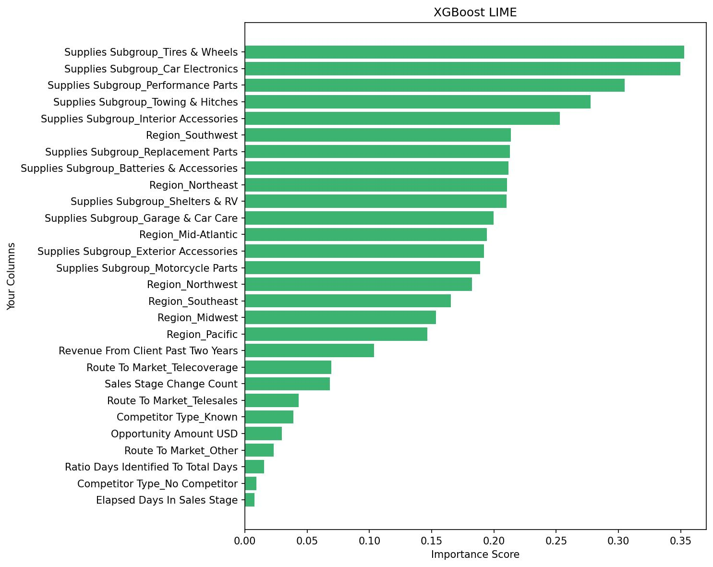

Original (100% Features)
Compared Matrix
Alejandro Axel Sanchez Silva
Human-Centred AI Masters
Dataset: 78,025 records from an automotive CRM.
Severe Class Imbalance:
Returning clients exhibit win rates exceeding 82%.
Resellers outperform Field Sales by nearly 10%.
Successful deals have steady movement; lost deals stagnate with massive outliers.

High-dollar proposals face a much higher rejection rate.

Correlation-Based Redundancy Removal to mitigate multicollinearity.
All attributes included (100% Features)

Redundant variables removed (Moderate Filter)
ADASYN 75%
SMOTE 75%

Aggressive filtration (Nearly independent variables)
ADASYN 25%

SMOTE 25%
Applied strictly to Training Data.
| Rank | Configuration | Accuracy | F1 Score | ROC-AUC |
|---|---|---|---|---|
| 1 | XGBoost (SMOTE) - 100% Features | 89.57% | 0.7576 | 0.9390 |
| 5 | Random Forest (SMOTE) - 100% Features | 87.61% | 0.7195 | 0.9250 |
| 9 | TabNet (SMOTE) - 75% Features | 86.54% | 0.6979 | 0.9015 |
| 15 | FT-Transformer (ADASYN) - 75% Features | 86.81% | 0.6830 | 0.9083 |
Result: Traditional tree-based models decisively outclassed Modern Deep Learning.
Transforming complex models into "human-readable" tools.
Permutation Importance

SHAP

LIME

The Ethical Accuracy-Calibration Paradox
| Rank | Model Configuration | Accuracy | F1 Score | ROC-AUC |
|---|---|---|---|---|
| 1 | XGBoost (SMOTE) - 100% Features | 89.57% | 0.7576 | 0.9390 |
| 2 | XGBoost (ADASYN) - 100% Features | 89.50% | 0.7554 | 0.9387 |
| 3 | XGBoost (SMOTE) - 75% Features | 89.50% | 0.7551 | 0.9385 |
| 4 | XGBoost (ADASYN) - 75% Features | 89.44% | 0.7533 | 0.9385 |
| 5 | Random Forest (SMOTE) - 100% Features | 87.61% | 0.7195 | 0.9250 |
| 6 | Random Forest (ADASYN) - 100% Features | 87.60% | 0.7186 | 0.9248 |
| 7 | Random Forest (SMOTE) - 75% Features | 87.53% | 0.7157 | 0.9242 |
| 8 | Random Forest (ADASYN) - 75% Features | 87.39% | 0.7121 | 0.9234 |
| 9 | TabNet (SMOTE) - 75% Features | 86.54% | 0.6979 | 0.9015 |
| 10 | TabNet (ADASYN) - 75% Features | 86.53% | 0.6976 | 0.9015 |
| 11 | TabNet (SMOTE) - 100% Features | 86.15% | 0.6865 | 0.8927 |
| 12 | TabNet (ADASYN) - 100% Features | 85.94% | 0.6811 | 0.8918 |
| 13 | XGBoost (ADASYN) - 25% Features | 86.91% | 0.6811 | 0.8879 |
| 14 | XGBoost (SMOTE) - 25% Features | 86.88% | 0.6806 | 0.8878 |
| 15 | FT-Transformer (ADASYN) - 75% Features | 86.81% | 0.6830 | 0.9083 |
| 16 | FT-Transformer (SMOTE) - 75% Features | 86.66% | 0.6784 | 0.9085 |
| 17 | FT-Transformer (ADASYN) - 100% Features | 86.30% | 0.6698 | 0.9018 |
| 18 | Random Forest (SMOTE) - 25% Features | 86.19% | 0.6685 | 0.8804 |
| 19 | Random Forest (ADASYN) - 25% Features | 86.20% | 0.6680 | 0.8802 |
| 20 | FT-Transformer (SMOTE) - 100% Features | 86.17% | 0.6657 | 0.9009 |
| 21 | TabNet (SMOTE) - 25% Features | 82.72% | 0.6276 | 0.8404 |
| 22 | TabNet (ADASYN) - 25% Features | 82.37% | 0.6223 | 0.8404 |
| 23 | FT-Transformer (ADASYN) - 25% Features | 84.14% | 0.6033 | 0.8521 |
| 24 | FT-Transformer (SMOTE) - 25% Features | 83.99% | 0.5969 | 0.8524 |